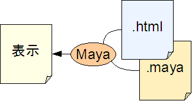
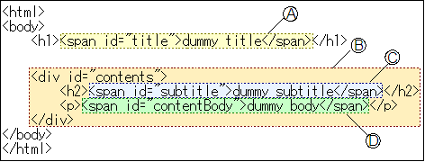
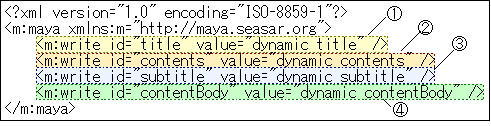
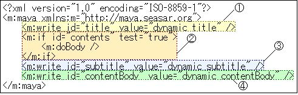
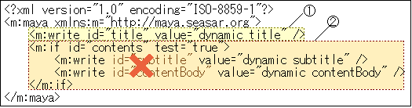
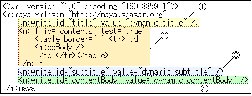

2-5. 設定の記述方法
Maya の設定を記述する方法は大きく分けて 2 種類あります。ひとつはこれまでのサンプルコードのように maya ファイルを使う方法、もうひとつはテンプレートの HTML ファイルに直接設定を書き込む方法です。また、この 2 種類の方法を混在させることもできます。
maya ファイルを使う
Maya の基本的な利用方法は、テンプレートに対応する maya ファイルを用意する方法です。テンプレートを純粋な HTML のままにしたい場合はこの形を使います。
maya ファイルはテンプレート HTML ファイルの拡張子を .maya に変えた XML ファイルです。テンプレートにつきひとつの maya ファイルを用意し、動的な処理を設定します。

記述方法は、前提知識として XML 名前空間を知っていると理解しやすくなります。XML 名前空間に関する説明や参考資料はこのページの最後にあります。ここでは Maya の機能を表すプレフィクスとして "m:" を使って説明します。
maya ファイルのタグはプロセッサ
maya ファイルにタグとして書く、Maya の様々なテンプレート処理機能のことをプロセッサと呼びます。たとえば「write プロセッサ」を使うなら <m:write> タグを書き、「if プロセッサ」を使うなら <m:if> タグを書きます。
HTML タグにプロセッサを割り当てる
動的な出力を行うには、基本的には HTML タグに id 属性を付け、maya ファイルでその id を指定してプロセッサと対応させます。デフォルトでは id を指定した元のタグとそのボディ (タグで囲まれた範囲) を消し、maya ファイルで定義したプロセッサの出力によって置き換えます。プロセッサのタグに replace="false" と属性を付けた場合、元のタグを消さずにボディだけをプロセッサの出力によって置き換えます。
「置き換える」という点に注意してください。たとえば図 2-5-2 のテンプレートには、id 属性を持つタグが 4 つあります。

このテンプレートに対し図 2-5-3 の maya ファイルを合わせて実行すると、実際に処理されるのは (A)(1) と (B)(2) のみになります。これは (B) が置き換えられた結果、(B) に内包されている (C) と (D) が無くなってしまうためです。

図 2-5-2 のテンプレートを図 2-5-3 の maya ファイルと合わせた場合の実行結果<html> <body> <h1>dynamic title</h1> dynamic contents </body> </html>
(C) と (D) を有効にするには、(B) にボディ処理できるプロセッサを対応させ、ボディを処理したいタイミングで doBody プロセッサを呼び出します。ボディ処理できるプロセッサには、たとえば if があります。どのプロセッサがボディ処理できるかはプロセッサ リファレンスを参照してください。
(B) のボディ処理を m:doBody の位置で実行しますが、対応する設定ファイルは元の maya ファイル全体です。(3) と (4) は (2) の外にありますが、(C)、(D) は正しく (C)(3)、(D)(4) で処理されます。

図 2-5-2 のテンプレートを図 2-5-4 の maya ファイルと合わせた場合の実行結果<html> <body> <h1>dynamic title</h1> <h2>dynamic subtitle</h2> <p>dynamic contentBody</p> </body> </html>
もし (2) に m:doBody を書かず (3) と (4) をそのまま書いてしまった場合、(B)(2) 処理のときに (3) と (4) が id と無関係に処理されます。その際に (C) と (D) を囲むタグも (B) と一緒に消えてしまうため、実行結果は (3) と (4) の出力のみになります。

図 2-5-2 のテンプレートを図 2-5-6 の maya ファイルと合わせた場合の実行結果<html> <body> <h1>dynamic title</h1> dynamic subtitle dynamic contentBody </body> </html>
(3) と (4) がそのまま出力されたように、ボディ処理できるプロセッサのタグボディに書かれたものは基本的にそのまま処理されます (プロセッサに依存)。従って、ここに文字列を書けば文字列がそのまま出力されますし、プロセッサを書けば実行されます。HTML タグはプロセッサと対応しませんので、文字列としてそのまま出力されます。

図 2-5-2 のテンプレートを図 2-5-7 の maya ファイルと合わせた場合の実行結果<html> <body> <h1>dynamic title</h1> <table border="1"><tr><td> <h2>dynamic subtitle</h2> <p>dynamic contentBody</p> </td></tr></table> </body> </html>
暗黙の m:doBody
Maya は次の2点を満たす場合、暗黙的に m:doBody が書かれたものとみなします。
- ボディ処理できるプロセッサであること
- ボディに空白、改行、TAB 文字以外を含まないこと (例外あり)
たとえば if プロセッサを使い、テンプレート上に書かれたタグの表示/非表示を切り替えるだけの場合、次のように書けます。この例では user というオブジェクトに isManager というメソッドがあり、管理者の場合のみ trueを返すとします。
page.html<html> <body> <h1>dynamic title</h1> <div id="adminMenu"> <a href="add_user.html">add user</a> </div> <div> contents </div> </body> </html>page.maya<?xml version="1.0" encoding="ISO-8859-1"?> <m:maya xmlns:m="http://maya.seasar.org"> <m:if id="adminMenu" test="${ user.isManager() }" /> </m:maya>
HTML の id を使いたくない場合
HTML の id 属性は CSS や JavaScript などから利用することもあります。maya ファイルとのバインディングに id 属性を使いたくない場合には、m:id として maya 名前空間の id を使うことができます。その場合、maya ファイルに書いていた Maya の名前空間指定 (xmlns:m="http://maya.seasar.org") を、テンプレートの html タグの属性として書く必要があります。
m:id 属性と id 属性の両方がある場合、maya ファイルとのバインディングには m:id 属性が優先されます。また、m:id 属性は実行時に出力されません。
hello.html<html xmlns:m="http://maya.seasar.org"> <body> <span m:id="message" id="forCss">dummy message</span> </body> </html>hello.maya<?xml version="1.0" encoding="ISO-8859-1"?> <m:maya xmlns:m="http://maya.seasar.org"> <m:write id="message" value="Hello Maya!" replace="false" /> </m:maya>
テンプレート上に設定を書く
Maya は、maya ファイルではなくテンプレート上に設定を書くこともできます。後述するレイアウト共有機能など一部の機能は maya ファイルを使わなければ実現できませんが、簡単な処理の場合などにファイル数が多くなるのを避けることができます。
HTML タグにプロセッサを割り当てる
maya ファイルを使う場合は、id によるマッピングで HTML タグにプロセッサを割り当てます。テンプレートに直接書く場合は、その代わりとして m:inject 属性を使います。また、maya ファイルに書いていた名前空間指定 (xmlns:m="http://maya.seasar.org") を、テンプレートの html タグの属性として書く必要があります。
m:inject 属性の値にはマッピングするプロセッサ名 (maya ファイルに書く場合のタグ名) を書き、プロセッサの属性は maya ファイルと同様に書きます。ただし、プロセッサの属性のプレフィクスを省略することはできません。(名前空間とプレフィクスについてはこのページの最後で説明しています)
例として m:write (hello.html) と c:out (hello_jstl.html) のサンプルを、テンプレート上に設定を書く形で書き換えてみます。特に c:out のサンプルに注意してください。value は c:out の属性であるため、プレフィクスとして c: が付きます。
hello.htmlでテンプレート上に設定を書いた場合<html xmlns:m="http://maya.seasar.org"> <body> <span m:inject="m:write" m:value="Hello Maya!">dummy message</span> </body> </html>hello_jstl.htmlでテンプレート上に設定を書いた場合<html xmlns:m="http://maya.seasar.org" xmlns:c="http://java.sun.com/jsp/jstl/core"> <body> <span m:inject="c:out" c:value="Hello Maya!">dummy message</span> </body> </html>
maya ファイルとテンプレート上の設定の両方を使う
maya ファイルを使う方法とテンプレート上に書く方法の 2 種類を説明しましたが、これらの方法を混在させることもできます。
hello.htmlで id 指定とテンプレート上の設定の両方を使う<html xmlns:m="http://maya.seasar.org"> <body> <div id="condition"> <span m:inject="m:write" m:value="Hello Maya!">dummy message</span> </div> </body> </html>hello.maya<?xml version="1.0" encoding="ISO-8859-1"?> <m:maya xmlns:m="http://maya.seasar.org"> <m:if id="condition" test="${ 1 == 1 }" /> </m:maya>
同じタグにテンプレート上の指定、maya ファイルでの指定の両方を書いた場合、テンプレート上の指定が優先されます。
名前空間とプレフィクス
Maya の設定ファイルは XML 形式で、プロセッサをタグとして記述します。Maya のエンジン機能と JSP カスタムタグなどの機能名が重複しないよう、XML 名前空間を利用して区別します。ここでは XML 名前空間についての説明を行いません。また、簡単のため厳密ではない表現をすることがあります。XML 名前空間については参考文献をご覧ください。
Maya の機能で推奨するプレフィクスは次の通りです。
| 機能名 | URL | 推奨プレフィクス |
|---|---|---|
| Maya のエンジン機能 | http://maya.seasar.org | m |
JSP カスタムタグを利用する場合、JSP の taglib ディレクティブで指定するプレフィクスと URI を、XML 名前空間のプレフィクス、URL として指定します。
属性の名前空間が属しているタグと同じ場合はプレフィクスを省略できます。下の例で青色・斜体になっているプレフィクスが省略可能なものです。これまでのサンプルは省略した形で表記していましたが、厳密な記述をするときにはこの例のようになります。
<?xml version="1.0" encoding="ISO-8859-1"?> <m:maya xmlns:m="http://maya.seasar.org" xmlns:c="http://java.sun.com/jsp/jstl/core"> <m:if m:id="role" m:test="${ user.isManager() }" > <m:write m:value="manager" /> </m:if> <c:out m:id="message" c:value="Hello Maya!" /> </m:maya>
参考文献
- Namespaces in XML
- http://www.w3.org/TR/REC-xml-names
- XML名前空間の簡単な説明
- http://www.kanzaki.com/docs/sw/names.html